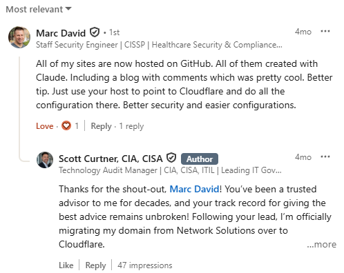

Why I Left Network Solutions for Cloudflare
Is it worth moving your domains from Network Solutions to Cloudflare?
For me it was about $246 a year. Four domains that cost roughly $285 at Network Solutions now run about $39 at Cloudflare, mostly because redirects and WHOIS privacy are billed as add-ons at one and included at the other. The migration is straightforward for any domain where nothing breaks if DNS goes wrong. The one that routes your email is a different job, and it is the one worth slowing down for.
A friend I worked alongside at Bank of America for about fourteen years, someone I’ve been snowboarding with, a super smart guy I respect, left this comment under my post about building scottcurtner.com from scratch:
“All of my sites are now hosted on GitHub. All of them created with Claude. Including a blog with comments which was pretty cool. Better tip. Just use your host to point to Cloudflare and do all the configuration there. Better security and easier configurations.”

That was Marc David, a Staff Security Engineer and CISSP who also created Byte Sized Security, and it took him about forty words to say something I should have already known. I’d just spent an entire post walking readers through a Network Solutions DNS problem nobody warns you about. Marc read it. The tip he left wasn’t about the DNS problem. It was about the fact that I was still doing business with the company that caused it.
I’ve spent thirty years auditing other people’s technology. Billion-dollar banks, payment systems, identity infrastructure, the kind of engagements where a control weakness gets written up, tracked, and remediated on a deadline. I wasn’t running that discipline against my own domain bills. Not because they were beneath my notice ... I saw the charges every year, and I knew in a general way what was sitting in there. I left them alone because I had a pretty accurate idea of what it would take to do anything about it.
Marc’s comment inspired me to don my AI mechsuit and fix some long overdue nagging website problems.
What I actually found
I own four domains. They were scattered across two separate Network Solutions accounts, which I didn’t know until I went looking ... one holding three of them, a second, older account holding the fourth almost by accident. Untangling which domain lived where was step one, and it told me something before I’d looked at a single dollar figure. Not that any of it was news. I knew what I owned. I had just never sat down and mapped it.
Then I pulled the billing history.
“Web Forwarding” ... a redirect, one domain pointing at another ... was billed as its own line item. $20.99 a year on one domain, $18.99 on another, and a five-year block on a third at $79.95, which works out to $15.99 a year. Cloudflare includes it for no extra cost. “Domain Privacy + Protection,” which masks your name and address in the public WHOIS record, ran $21.99 a year per domain. Cloudflare includes that too, at no extra charge. And sitting quietly on the older account, a Weebly hosting package from a FatCow account I set up many years ago,1 and an email box I hadn’t touched in years, both still renewing, both still being paid for. So much waste hiding behind my hesitancy to delve into such a mess.
I’ve been seeing these same line items hit my credit card year after year. Marc provided the magic words I needed to hear, and with AI at my side, I was finally ready to conquer these beasts that had been lurking in my books for far too long!
Domain Privacy first shows up on my account in June 2024 at $11.99 per domain, typed on the invoice as an acquisition. April 2025 it renewed at $19.99. April 2026 it renewed at $21.99. That’s an eighty-three percent increase in under two years, on a service my new registrar gives away. Such price increases are tailor-made for the customer who is too afraid to look for competitors, or too overwhelmed with more pressing parts of life to take notice. Web Forwarding on one domain went $16.99, then $18.99, then $20.99 ... two dollars a year, every year, like a metronome of stealth price creeps just below the noticeable threshold. You’ve seen this with all kinds of recurring subscription services, right?
| Line item | First seen | Next renewal | Most recent |
|---|---|---|---|
| Domain Privacy + Protection | $11.99 (Jun 2024) | $19.99 (Apr 2025) | $21.99 (Apr 2026) |
| Web Forwarding | $16.99 (Apr 2024) | $18.99 (Apr 2025) | $20.99 (Apr 2026) |
This wasn’t hidden from me. Every one of those numbers sat in a billing history I glanced at maybe once a year for a decade.
Across the main account, those add-ons alone came to $99.95 a year, and none of them were the domains themselves. Add the registrations, plus the Weebly package and the mailbox on the older account, and I was somewhere around $285 a year across four domains, for a mix of things I needed and things I’d been meaning to deal with for years.2 The same four domains, now with Cloudflare, run me about $39 a year total.
Cloudflare’s registrar sells domains at cost. AT COST! Not a discount, not an introductory rate that resets in year two ... they charge what the registry charges them and make their money elsewhere. For a .com right now that’s about $10.46: a $10.26 Verisign registry fee plus ICANN’s twenty cents.3 Worth knowing that “at cost” doesn’t mean a forever fixed price, but dang, it is so refreshing! Verisign’s fee goes to $10.97 on November 1, 2026, and Cloudflare’s price will go up with it ... by exactly that amount and no more.3
So roughly $246 a year recovered, for as long as I hold these domains, because my buddy Marc spent thirty seconds typing a comment.
The part that was almost enjoyable
Somewhere in the middle of this, Network Solutions stopped being a billing problem and became a user experience worth documenting.
The DNS settings for any given domain sit behind a full page of upsells. Find the nameserver field and a modal appears, warning you in slightly ominous language that changing it will disable “the suite of Network Solutions services” you are in the middle of trying to leave.
The best moment came when I requested the transfer authorization code. That’s the code that proves you own a domain and lets another registrar claim it, and ICANN requires your registrar to hand it over within five calendar days of your asking.4 You cannot be held. Before sending it, their system offered me a discount to stay: $19.99 to renew right then... Uhm, that’s still nearly double what Cloudflare charges for the same year. I declined. The code arrived about twenty-four hours later, which is inside the window their own completion notice tells you to expect5 ... a small honest detail buried inside an otherwise adversarial process.
More than once, changing a domain’s nameservers produced two emails inside the same minute. Kudos to Network Solutions for that! One confirmed the change had succeeded. The other said it had failed. Both were describing the same event. I refreshed the page to find the truth and each time the change had gone through fine.
None of it was dangerous. It was friction layered on friction, on infrastructure that has been acquired and re-acquired for decades. One domain’s old nameservers pointed at WorldNic, which is Network Solutions’ own nameserver brand and has been for about as long as they’ve had one. Another pointed to my old FatCow.
I set that domain up at FatCow myself, decades ago. I knew that. What I hadn’t thought about in a long time was that the nameserver line still said so.
FatCow was a competitor back then, a different company selling against Network Solutions, and Endurance International Group bought them in 2005. Endurance’s web presence division and Web.com Group ... which had owned Network Solutions since 2011 ... were folded together by a pair of private equity firms in February 2021 into a new parent called Newfold Digital.6 Sixteen years and two acquisitions sit between the company I signed up with and the company that was sending me the bill, and I never moved that domain. That FatCow mooooved around me.
The one domain where this actually mattered
Three of the four migrations were low stakes. Nothing lived on them that would break in a way anyone would notice.
The fourth routes my email. Getting a single DNS record wrong there doesn’t produce an inconvenience. It produces a broken inbox.
If I break a web page, I know within a minute, because I go look at it and it’s broken. If I break mail delivery, everything on my end keeps working. My inbox opens. My old messages are all there. I can send. What stops is other people’s messages from reaching me.
Before touching anything, I had Claude pull every existing record into a written inventory. Three address records ... the A records that point a name at an actual server. Five subdomain aliases, CNAMEs, for calendar, documents, mail, sites, and video. And five MX records, the ones that tell the rest of the internet where to deliver mail, each carrying a priority number that sets the order servers try them in. Thirteen records total, captured in full, before a single change was made.
Cloudflare scans your existing DNS when you add a domain and imports whatever it finds. That scan is convenient and it is not authoritative. It reads what is published, which means anything already misconfigured gets imported exactly as misconfigured, and it arrives looking like a clean result. So when the scan finished, Claude compared it against the inventory, record by record, priority by priority, and came back thirteen for thirteen.
Which, if you read my last post, is exactly the arrangement I warned about. The thing that captured the inventory is the thing that checked the import against it. I had a written artifact instead of a vibe, which beats nothing and is not the same as an independent check.
So I sent a test message from outside and waited for it to land... fingers crossed.
It arrived!
Is it worth moving your domains from Network Solutions to Cloudflare?
On the money, for me, plainly yes. Two hundred forty-six dollars a year is not life-changing and it is also not nothing, and it recurred quietly year after year while I held some of these domains for more than two decades.
The money for domains I wasn’t using was a minor annoyance. The finding underneath it is the one that excites me. I run this exact kind of review for a living. I do it well. And I still let that money go out the door year after year ... not because I forgot it was there, and not because I decided it was too small to matter. I knew the number was wrong. I put it off because I knew what fixing it would cost me.
That part gets misdiagnosed a lot, and I think it’s worth saying plainly. I’m a tech generalist. Thirty years of knowing a little about a great many things means I can look at a job like this and price it accurately, and the price was always the same: a string of evenings learning registrar mechanics and DNS minutiae I would use exactly once and never need again. So every year I looked at it, understood it, and decided not tonight. Knowing enough to estimate the cost is what kept me away from it. And I don’t think knowing less would have helped. The people I talk to who know less about this stuff than I do aren’t charging in where I hesitated. They mostly don’t know the job is available to them at all. If they’re using AI at the edges, they don’t know what to ask, and they can’t judge the answer well enough to act on what it points them toward. Opposite reasons, same result: the thing doesn’t get done.
What changed is the mental mechsuit. Migrating a domain, rebuilding a site, evolving it afterward ... all of that still takes time, but it no longer takes specialist knowledge I don’t have, because AI unlocks that part for me. It cut straight through the Network Solutions opacity and the scare tactics and got me to the thing I actually wanted. I keep having this experience lately, and I have not gotten used to it: a thing I had accepted as permanently out of reach turns out to be a Tuesday evening.
If I saw such stale accounts during an audit, I’d have written up an observation. Recurring charges and services renewing years past the point anyone used them. An asset inventory so incomplete the owner couldn’t say which account held which domain. Those are ordinary findings. It was long overdue for me to correct such observations for my own situation. I guess when the charges are small enough, no threshold ever trips.
The control I put in place afterward is small and it’s now permanent. Before I touch infrastructure that anything real depends on, I have Claude capture what exists into the MCP wiki knowledge base I built for exactly this kind of thing, so there is a written record that doesn’t live inside the tool I’m about to change. The new state gets checked against that record rather than against the tool’s own report of itself. And for anything that can fail silently, I still go put my own eyes on it ... the test message, the page load, the thing only a human bothering to look can confirm. That’s the whole thing. It’s the type of documentation and verification that I would expect any engineering team under my audits to be able to show me on request, already documented, not caught by surprise and having to research it for me. It took my buddy’s LinkedIn comment and my new AI intellectual superpowers to correct the problem and build the control that had always been missing.
In case I’m not being clear, none of this happened alone. I worked through all four migrations with Claude open in another window, doing the record-by-record work I would have skimmed, walking me through the difference between a registrar lock and a transfer confirmation. Without that, this wasn’t a night’s work. It was many nights, most of them spent re-reading support articles that explain nothing.
What I keep coming back to
It’s easy to underestimate what a small, well-placed piece of information is worth to the person receiving it.
Marc wasn’t trying to save me $246 a year when he left that comment. He was being helpful, the way people who know things sometimes are, without much thought about where it might land. It turned into real money recovered, three rebuilt websites, a control I now run every time, and a much better understanding of infrastructure I’d been paying for and putting off for years.
That’s most of why I write these. Somebody tells me a post got them to try a thing they’d been circling for years, and it’s the same forty words landing somewhere else.
Thanks, Marc.
Credit. The tip that started all of this came from Marc David, who left it as a comment without being asked and without any idea where it would go: linkedin.com/in/marccdavid. He also created Byte Sized Security, bytesizedsecurity.show. Thanks, Marc.
Sources
- FatCow bundled Weebly’s drag-and-drop website builder with its hosting plans. A contemporaneous 2013 review written from inside a FatCow account weighs “their Weebly builder” against the other tools in the account: brendanewhouse.com/website-builder-review-fat-cow. Weebly also ran a reseller program for hosting providers, Weebly for Hosts: weebly.com/hosts. ↩
- On the figures: the per-line-item amounts and the year-over-year increases above come from Network Solutions invoices on the main account, read line by line. The roughly $285 annual total also includes charges on a second, older account I no longer had invoice-level access to, so treat that number as a reconstruction rather than a figure with an invoice behind it. The $99.95 in add-ons, the $11.99 to $21.99 privacy increase, and the $16.99 / $18.99 / $20.99 forwarding sequence are all documented. ↩
- Cloudflare Registrar prices domains at the registry’s wholesale rate with no registrar markup. The current .com calculation is a $10.26 Verisign registry fee plus a $0.20 ICANN transaction fee; the Verisign fee rises to $10.97 effective November 1, 2026. cloudflare.com/products/registrar. ↩
- ICANN, “About Auth-Code”: a registrar must either let the registrant generate the code themselves through a control panel, or “provide the Auth-Code within five calendar days of a request.” icann.org/resources/pages/auth-2013-05-03-en. See also ICANN’s registrant transfer FAQ: icann.org/resources/pages/name-holder-faqs-2017-10-10-en. ↩
- Network Solutions’ own completion notice, shown after the transfer authorization request is submitted, advises allowing up to 24 hours for the code to arrive. ↩
- Endurance International Group acquired FatCow Web Hosting in April 2005 (Boston Business Journal, via HostSearch: hostsearch.com). Web.com acquired Network Solutions in 2011. Newfold Digital was formed in February 2021 from the combination of Web.com Group (Siris Capital) and Endurance Web Presence (Clearlake Capital); its portfolio includes Network Solutions, Register.com, Domain.com, Bluehost, HostGator, and the former Endurance brands. newfold.com. ↩